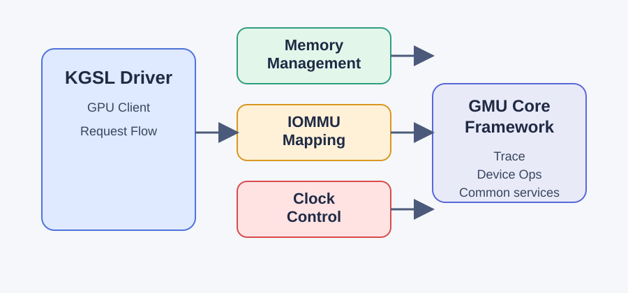

GMU Core Framework支持在不同adreno GPU代际与GPU交互提供通用层。该框架处理内存管理，IOMMU mapping，clock control，trace数据处理和GMU通用的交互基础。
Core Architecture
GMU Core Framework是KGSL驱动和特定代GMU实现（比如A6XX, GEN7）之间的独立与平台的layer。它提供所有GMU实现要求的通用的服务，它授权特定GEN的操作给gmu_dev_ops函数指针。
System Structure
